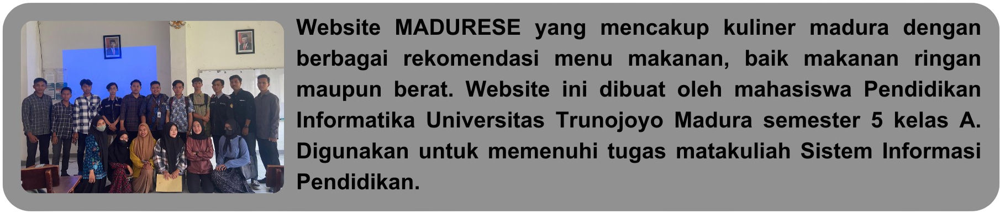

Menjadi sumber utama informasi kuliner Madura yang menginspirasi dan memudahkan masyarakat dalam menemukan dan menikmati kekayaan kuliner daerah Madura.
1. Memberikan Informasi Komprehensif: Menyediakan informasi lengkap dan akurat tentang berbagai jenis kuliner Madura, termasuk deskripsi, resep, dan ulasan pengguna.
2. Memajukan Kuliner Lokal: Mendukung dan mempromosikan pelaku usaha kuliner lokal di Madura untuk meningkatkan visibilitas dan daya tarik wisata kuliner daerah.
3. Memudahkan Pencarian: Menyediakan fitur pencarian yang intuitif dan efisien, memungkinkan pengguna dengan mudah menemukan restoran, warung, atau makanan khas Madura yang mereka cari.
4. Mendorong Kolaborasi: Membangun komunitas online yang aktif dan berkolaborasi, memungkinkan pengguna untuk berbagi pengalaman, rekomendasi, dan tips kuliner.
5. Menjaga Kualitas dan Keberlanjutan: Memastikan keberlanjutan informasi yang diberikan, dengan terus memperbarui konten, menambahkan inovasi, dan menjaga standar kualitas tinggi dalam memberikan informasi kuliner.
6. Memberikan Pengalaman yang Memuaskan: Menawarkan pengalaman pengguna yang memuaskan dan memikat, baik melalui antarmuka yang menarik, konten berkualitas, maupun responsif terhadap kebutuhan pengguna.